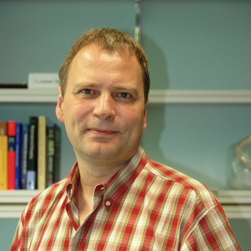

</a> 
<h2>Dr. habil. Peter Baumgartner</h2>

Principal Research Scientist<br>
<A HREF="http://nicta.com.au/director/research/programs/lc.cfm">Logic
and Computation</a> <br>
<A HREF="http://www.nicta.com.au/">National ICT Australia
(NICTA)</a><br>
<br>
and <A HREF="contact.html#adjunct">ANU Adjunct Associate Professor</a>
<br>
<br>
<b><A HREF="contact.html">Contact Details</a></b>
<hr>
    <center><font size="-1">
	[ Home
	| <A HREF="publications">Publications</a>
	| <A HREF="activities">Activities</a>
	| <A HREF="systems">Systems</a>
	| <A HREF="slides">Slides</a>
	| <A HREF="teaching">Teaching, Topics for Honors and Ph.D. Projects</a>
	]</font></center>

